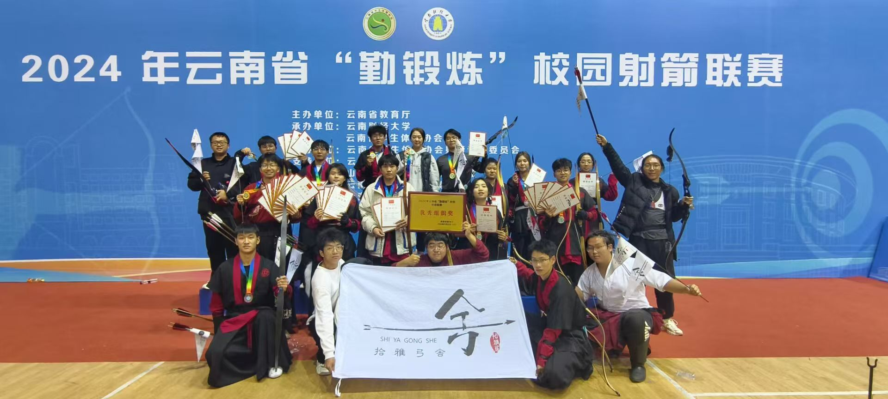
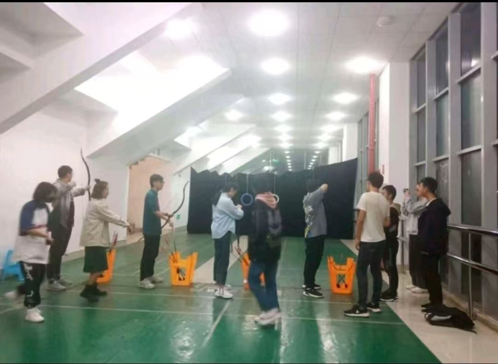
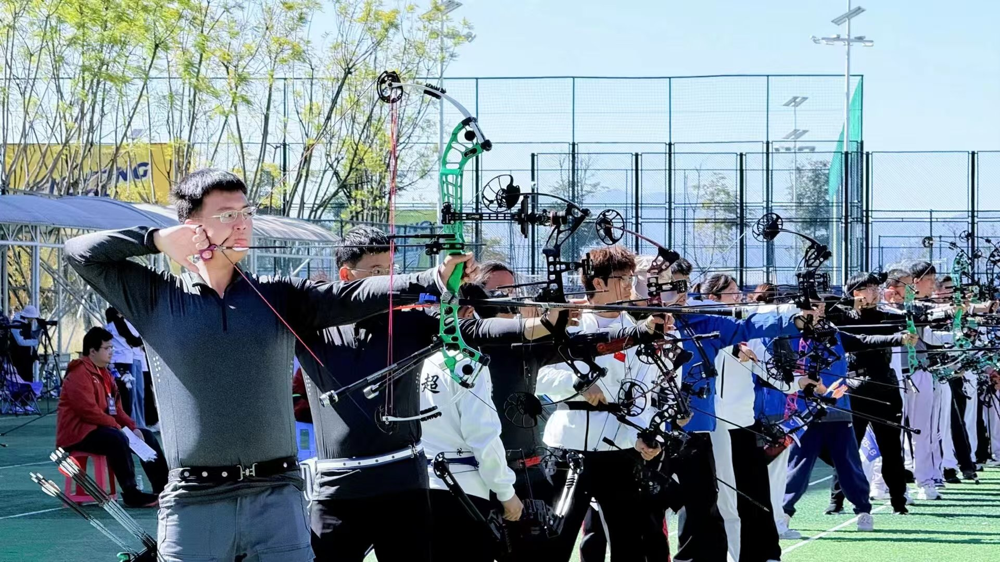
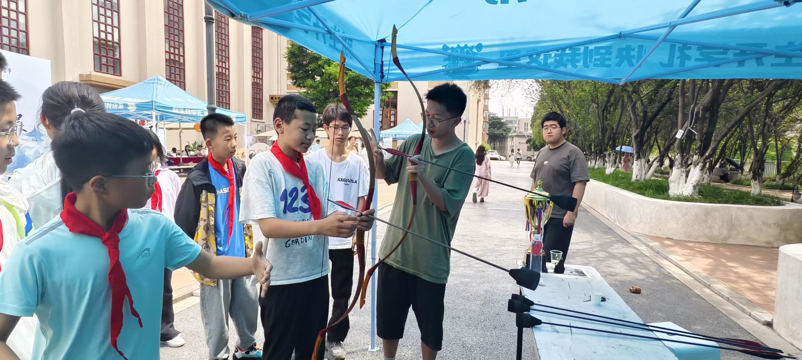
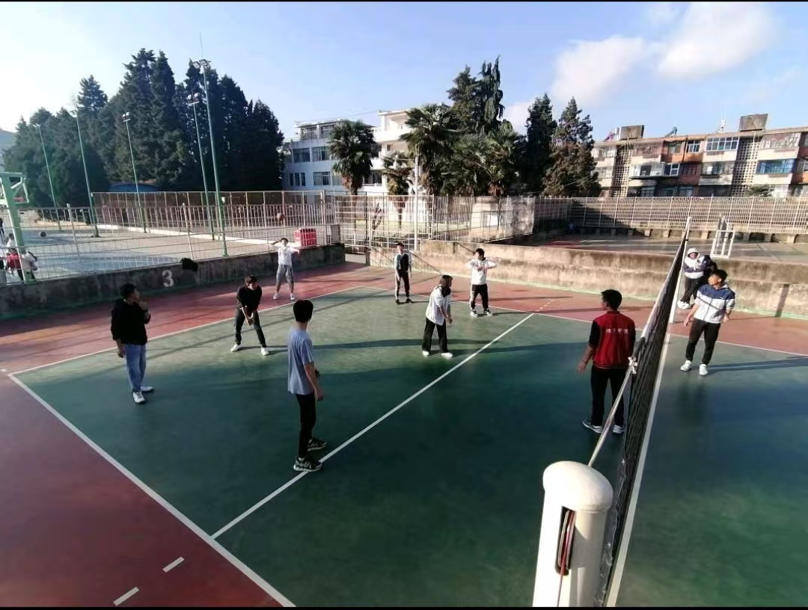
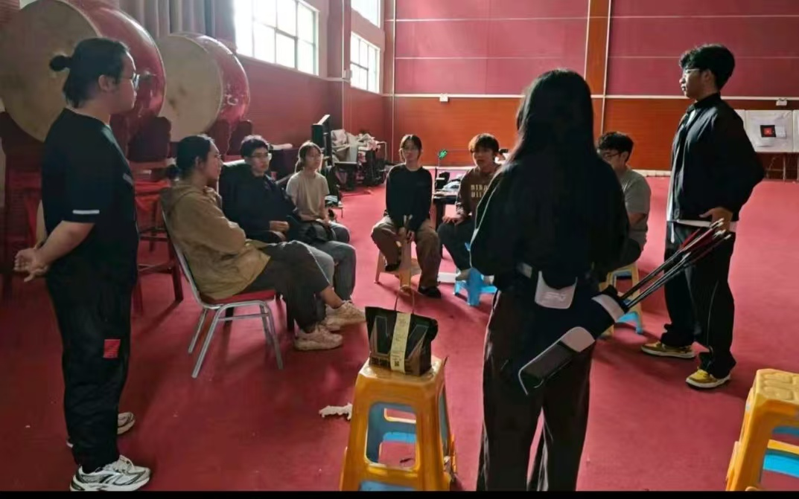
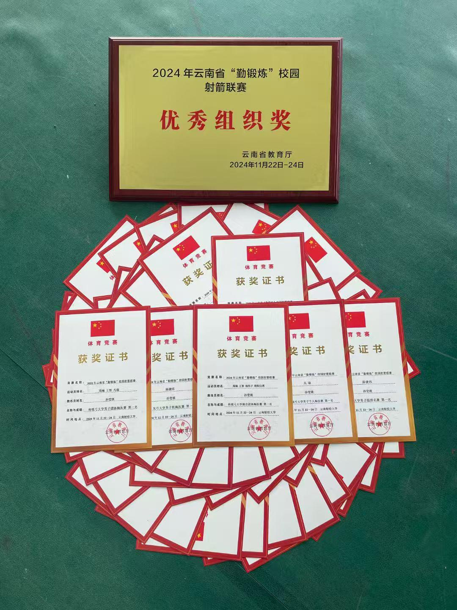

财务部
负责器材采购报销，记录收支明细，定期公示财务账单，管控活动经费。
器材与经费
向下浏览01 关于社团
以礼立心，以技砺行
社团成立于 2016 年，以普及射箭运动、强健青年体魄、锤炼专注沉稳心性为宗旨，面向全校射箭爱好者搭建交流实训平台。社团创立之初仅有十余名爱好者，历经多年发展，逐步完善训练器材、规范训练体系，成长为校内特色体育社团。
社团长期开展日常基础射箭训练、箭术技能教学、校内射箭交流赛等活动，定期组织跨社团联合团建、校外射箭研学活动。训练内容覆盖基础持弓站姿、瞄准发力、安全射箭规范等课程，兼顾新手入门与进阶成员技术提升。
近年来，社团围绕“竞技 + 休闲”双线模式推进品牌建设，形成零基础友好教学、常态化赛事比拼、户外实践研学三大特色。社团以培养自律坚韧、团结协作的青年学生为目标，兼顾运动竞技与身心素养培育。
02 部门组成
各司其职，拉满一张弓
负责器材采购报销，记录收支明细，定期公示财务账单，管控活动经费。
器材与经费对接校内其他社团、校外射箭机构，洽谈合作和物资赞助，对外宣传社团。
合作与传播策划射箭日常训练、赛事和团建活动，撰写活动方案，统筹现场流程安排。
训练与赛事03 精彩瞬间
弦鸣赛场，箭指远方
从石林赛场到玉溪总决赛，从奖牌、奖杯到每一次稳稳的瞄准，记录羿羽射艺协会并肩训练、并肩拼搏的时刻。
04 精彩活动
训练、竞技、传承

01旨在弘扬传统体育精神，提升参与者专注力与技巧。比赛设个人及团体项目，分初赛、决赛等阶段，依据环数决胜负，由专业裁判确保公平。
礼射精神 · 个人团体 · 公平竞技
02云南省“勤锻炼”校园射箭总决赛为学生提供竞技与交流平台；协会组织队员参赛，以竞赛检验日常训练成果并提升社团影响力。
以赛验练 · 竞技交流 · 追求卓越
03全方位展现中华礼射底蕴，教授参与者正确使用传统弓，体会中华传统文化。
传统弓体验 · 礼射文化 · 面向校园
04通过部门排球赛增加社员凝聚力，提供相互交流平台，展现成员运动风采。
部门联结 · 凝聚团队 · 运动风采
05向同学讲解基本礼射知识和传统六艺知识，让更多大学生了解中华礼射与中国传统文化。
传统六艺 · 礼射知识 · 文化传承05 荣誉墙
